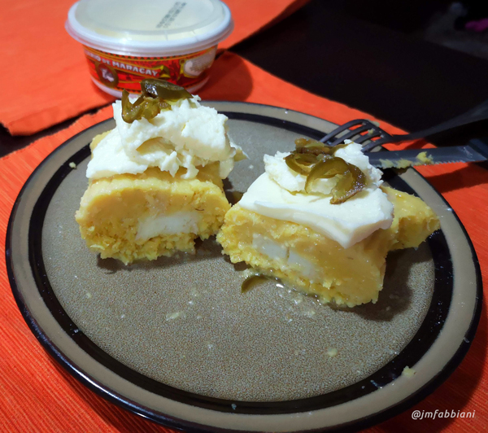

Bollito de Maíz
25/07/2018, Puerto Ordaz 
El jojoto tierno es la base de muchas preparaciones en nuestra hermosa tierra, aquí amamos las masas a base de maíz, las cachapas, arepas, hallaquitas, bollitos, hallacas son todas diversas derivaciones de los procesos que tiene el maíz, en el caso del maíz tierno y amarillo lo usamos como baso para la cachapa, que se hace en budare y se rellena o para hacer la cachapa de hoja, que es el resultado de una masa que se envuelve en la misma hoja del jojoto tierno y se amarra para que no se salga la masa del interior mientras se cocina en agua hirviendo.
Esta versión es la que llamamos también hallaquitas de jojoto, son en realidad dulzonas, pues nuestro maíz tierno es de sabor suave y se combina deliciosamente con un poco de dulce, luego al estar listas su sabor se realza con un poco de mantequilla y queso, son riquísimas para el desayuno.
Ingredientes:
15 jojotos grandes y no muy tiernos
5 cucharadas de azúcar
1 cda. de sal
Anís en pepita si se quiere
1 cda. de mantequilla
150 grs. de queso blanco rallado
½ taza de leche
Preparación
Se sacan las hojas de los jojotos, tratando de que se rompan lo menos posible, se lavan y se reservan.
Los jojotos se desgranan y se muelen en un molino o procesador hasta que queden muy finos, una vez molido se le añaden los demás ingredientes, se amasan y se envuelven en las hojas, se amarran en las puntas, se doblan y se vuelven a amarrar por la mitad y se cocinan en agua con sal, cuando abomben y endurezcan un poco ya están.